CarrierLink App: Real-Time Logistics Tracking
Rebuilding driver trust and app performance to turn a distrusted tracking tool into a 660,000-driver companion app.
Design Leadership · Field Research · Strategy
This case study demonstrates how we addressed critical inefficiencies and user experience challenges in logistics tracking to deliver the CarrierLink App, a real-time smartphone tracking solution that significantly improved visibility and driver workflow.
Executive summary
What is CarrierLink? A mobile app used by over 660,000 drivers to enable real-time shipment tracking, routing, and document capture.
The problem: Carriers without GPS/ELD systems had no reliable way to provide live tracking. Existing app adoption was low due to trust concerns, battery issues, performance problems, and poor UX.
My role: As the design leader, I partnered with engineering, product, and data science to define the strategy, conduct field research, rebuild driver trust, re-architect the experience, and improve adoption at scale.
Impact: Load visibility improved dramatically, app rating increased, app size was reduced by 40%, and battery + data consumption optimized — leading to massive adoption across North America.
Overview: the real problem behind "tracking"
Shipment visibility is FourKites' core value proposition, yet a significant portion of carriers didn't use GPS or ELD devices. Without automated tracking:
- Drivers were forced into constant manual check-ins.
- Brokers and shippers lacked real-time visibility.
- Decisions were delayed, and exceptions escalated unnecessarily.
- Trust between drivers and shippers eroded.
This wasn't a feature problem, it was an ecosystem gap where the driver's smartphone became the missing link.
CarrierLink® was positioned to fill that gap. But the app suffered from low adoption, poor ratings, trust issues, privacy concerns, battery drain complaints, and heavy app size.
As design leadership, my responsibility was not only to redesign the app but to rebuild driver trust, align cross-functional teams, and make the product usable in the unique context of long-haul trucking.
Research strategy: understanding drivers where they are
Why traditional UX research wouldn't work: Drivers are constantly on the move, operate on tight schedules, and are often fatigued. Remote interviews or scheduled calls were unrealistic.
Design leadership decision: We shifted to contextual discovery, meeting drivers at the actual facilities where they waited during late-night or early-morning windows.
Methods used:
- Late-night contextual research at a distribution facility. Meeting drivers on their schedule helped us uncover real-world constraints in tracking, routing, and trust.
- Shadowing drivers during loading/unloading wait times, travelled with them in truck.
- MoEngage auditing for onboarding, permissions, and rating recovery.
- App store review mining, analysing 280+ reviews.
- Data analysis on session patterns, drop-off, uninstalls, and usage.
- Location permission behaviour analysis to understand trust barriers.
Customer visit

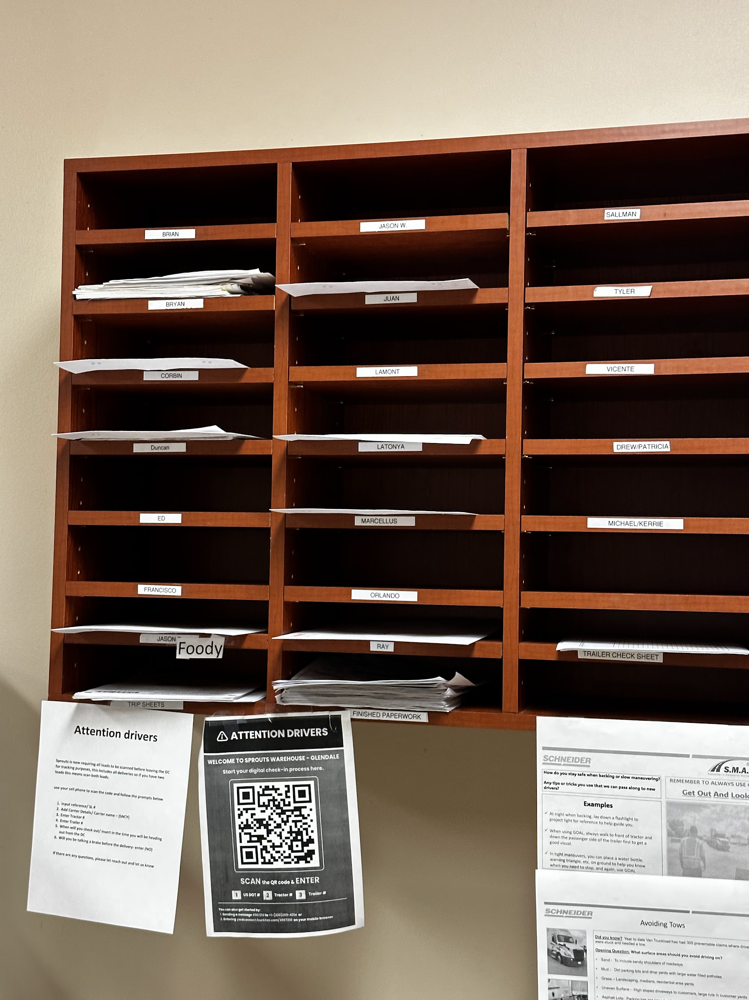
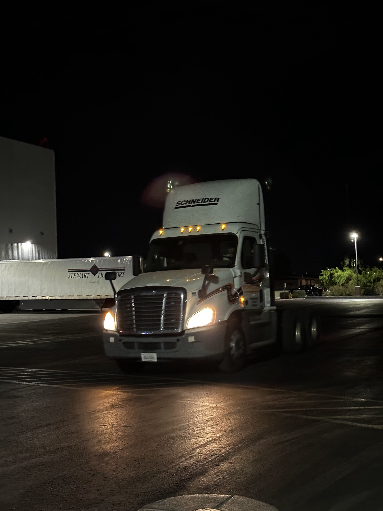
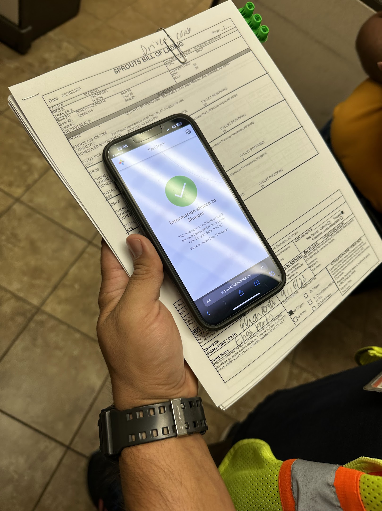
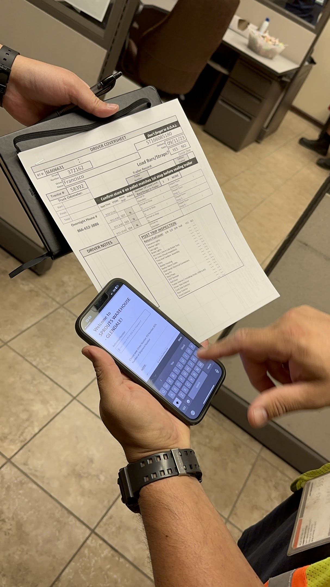
Persona & journey map
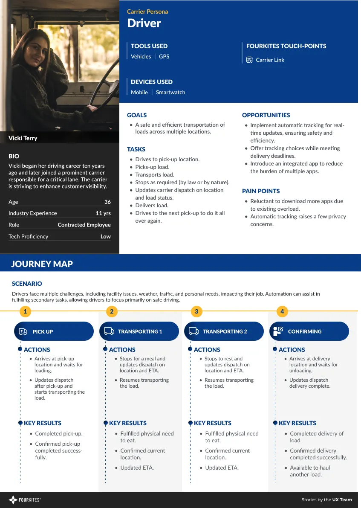
Key pain points identified:
- Distrust ("You're tracking me, not the load.")
- Fear of battery drain
- Heavy app size & slow performance
- Complex navigation
- Low-value communication experience
- Difficulty uploading documents
- Facility uncertainty (parking, amenities, wait times)
Problem framing
Primary problem: "How might we create a frictionless, trustworthy, low-effort mobile tracking experience for drivers that improves load visibility without disrupting their workflow?"
Secondary problems:
- Poor app experience was negatively affecting rating & adoption.
- App size, battery usage, and data consumption were barriers to usage.
- Drivers lacked contextual support — routes, amenities, docs.
- Carriers saw no clear value beyond tracking compliance.
This definition aligned leadership, product, engineering, CX, and sales.
Design iteration & testing
Initial adoption challenges. Despite solving the core tracking problem, the app faced significant challenges:
- Poor rating (3.2 rating) & user comments.
- Battery draining and application size issues.
- Trust and privacy issues: Drivers were reluctant to use it, feeling "we are tracking them, not the shipments."
- We conducted a qualitative analysis of 280 reviews, shortlisting 114 negative comments to identify 3 core themes.
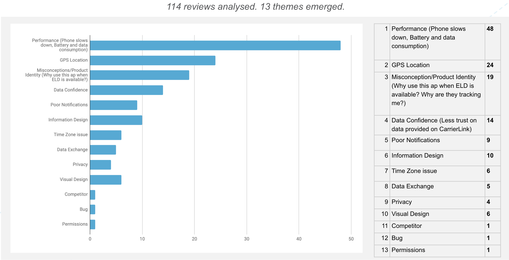
| Top 3 themes | # of reviews | Design priority |
|---|---|---|
| Performance (phone slows down, battery/data consumption) | 48 | Highest: performance optimization |
| GPS location | 24 | Stability & reliability of core function |
| Misconception/product identity (why use this app when ELD is available? why are they tracking me?) | 19 | Critical: trust building & communication |
Design strategy: from tracking tool to driver companion
As design leader, I set three design pillars to improve app performance.
Pillar 1: Trust by design
- Transparent location messaging
- Onboarding that clarifies shipment tracking, not personal tracking
- Humanised UI elements
- Privacy-first permission flows
Pillar 2: Performance optimization
- Single-tap tracking start/stop
- Background tracking requiring no driver action
- Ultra-low battery & data consumption goals (validated later: 7% battery in 8 hours, only 1.18MB data)
Pillar 3: Make it useful beyond tracking. This was crucial for adoption. We expanded the app into a driver utility hub:
- Free truck-optimized routing
- Nearby amenities
- Facility insights & ratings
- Document capture & signatures
These were intentionally chosen to deliver recurring value.
Impact and results
Through strategic user research, focused feature development, and performance-driven iteration, the CarrierLink App achieved significant positive impact:
- Adoption: Over 660,000+ drivers are now using CarrierLink for routing, visibility, and facility information.
- Product perception: CarrierLink is recognized as one of the highest rated free apps for carriers worldwide.
- Business value: It provides drivers access to voice-activated, truck-specific turn-by-turn navigation, eliminating unnecessary subscription costs. Drivers are presented with more routing options to compare time, distance, and routing costs to determine optimal routes.
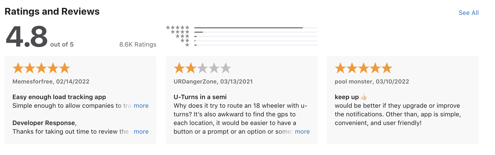
Customer feedback
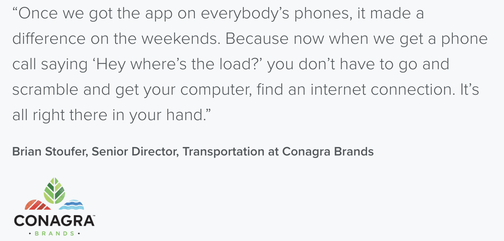
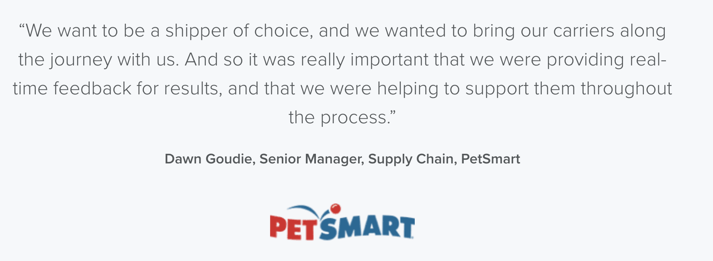
Designs
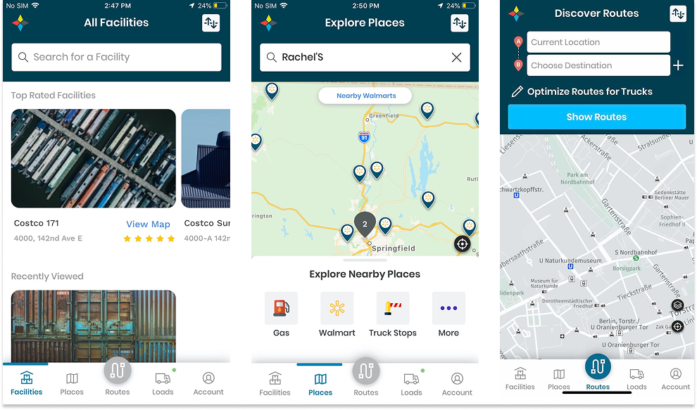
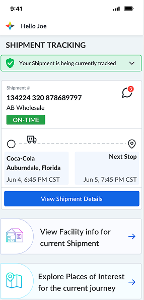
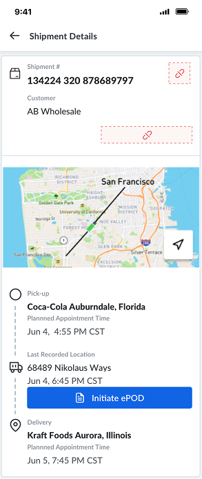
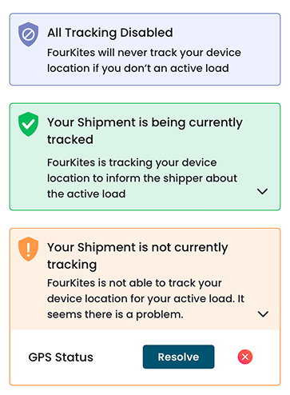
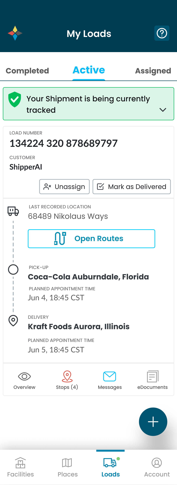
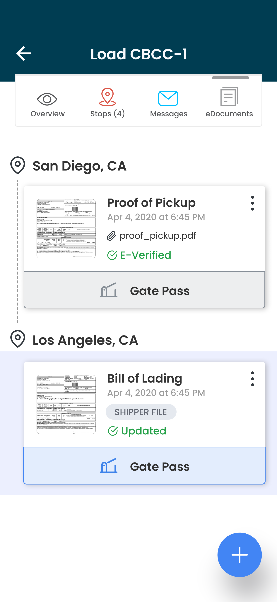
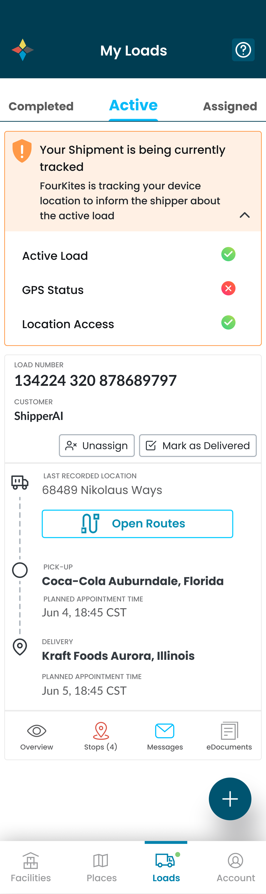
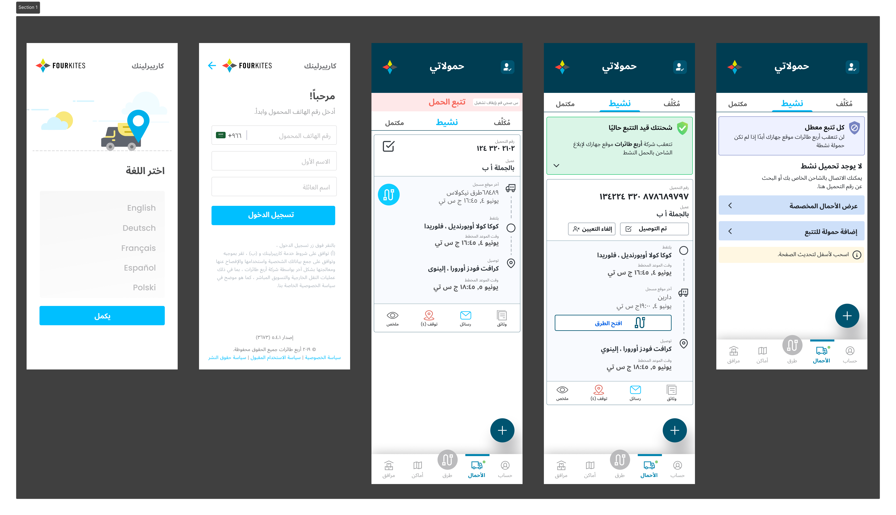